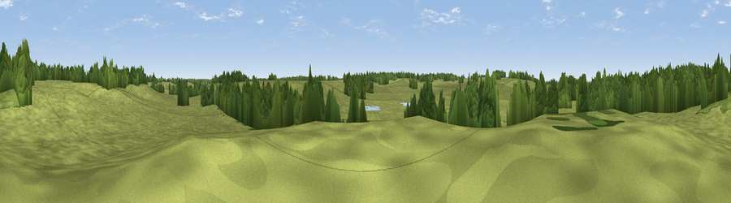

Burbush Hill
#45324 in England · top 91% of its area beats it · near BurleyThe view, rendered

A 360° render of this exact spot computed from the terrain model, tree cover and land cover — summer colours, afternoon light, calibrated against photographs of famous viewpoints. Real trees, hedges and buildings will differ in detail.
The panorama
Grey silhouette: terrain skyline in each direction (720 bearings, Earth curvature and refraction included). Dashed green: skyline with trees (+15 m) and buildings (+8 m) as obstacles. Blue strip: how far the ground is visible on each bearing.
Where the view opens
Wedge length = distance to the farthest visible ground on that bearing (vegetation-aware). Rings at 10, 25 and 50 km.
What fills the view
78% grassland · 21% woodland
Angular shares of the visible panorama (visual magnitude), not map area. Landscape diversity 0.25 (0–1 Shannon).
Key numbers
More beautiful places nearby
The staircase of upgrades: each row has a higher view potential than everything closer. Driving times are estimates from straight-line distance, calibrated against real road routing — check an actual route before setting out.
| Place | Direction | Drive | Score |
|---|---|---|---|
| Burley Beacon | NNW · 1 km | ~3 min | 26.2 |
| Dur Hill | WSW · 1 km | ~4 min | 39.7 |
| Viewpoint near Burley | NNW · 2 km | ~5 min | 41.0 |
| Viewpoint near Hightown | NNW · 3 km | ~8 min | 43.3 |
| Viewpoint near Highcliffe-on-Sea | S · 9 km | ~17 min | 46.0 |
| Viewpoint near Hurn | SW · 9 km | ~17 min | 53.7 |
| Warren Hill | SSW · 12 km | ~22 min | 60.1 |
| Viewpoint near Totland | SSE · 19 km | ~33 min | 75.0 |
50.81428, -1.70895 · source: osm peak · position refined by local search. Computed location — check access rights before visiting.